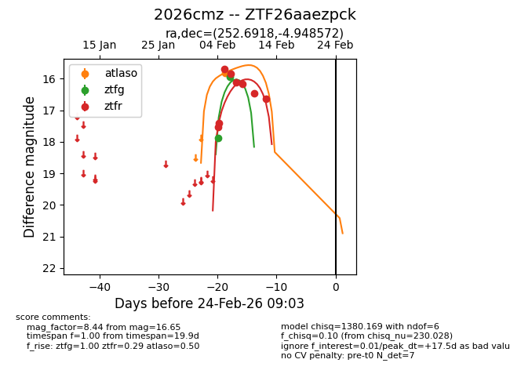
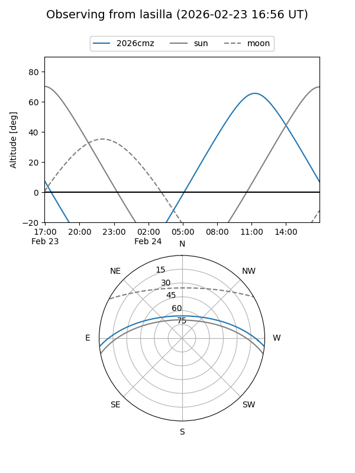
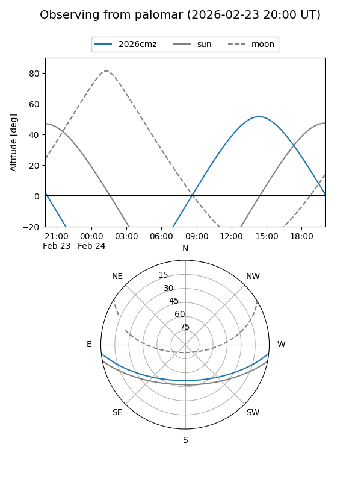
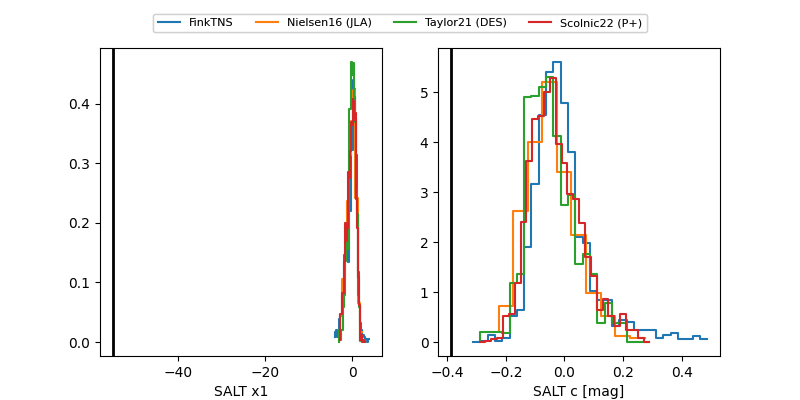

2026cmz
Target 2026cmz at 2026-02-24 09:08
Aliases and brokers:
FINK: link
Lasair: link
ALeRCE: link
TNS: link
YSE: link
alt names
ZTF26aaezpck (ztf,fink_ztf)
2026cmz (tns,yse)
Coordinates:
equatorial (ra, dec) = 252.6918,-4.94857
equatorial (HMS+DMS) = 16:50:46.03,-04:56:54.86
galactic (l, b) = (13.4290,+23.96930)
Flags:
Photometry:
last atlaso=15.82, ztfg=15.93, ztfr=16.65
1 atlaso, 2 ztfg, 8 ztfr detections
Lightcurve

Visibility


Additional plots
